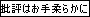
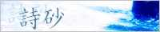
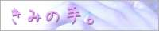
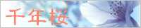

ちょこっと主張

何を読まれますか？
連載作品を読む 完結作品を読む 読みきり作品を読む
＊shift＋クリックで別窓表示されます。
（天鏡楼のみ自動的に別窓表示されます。）
| Another Story （LUST UP 2007.1.24） 異世界ファンタジー/長編連載 | |
|
それは、５つの音箱をめぐるもう一つの物語。 今、終焉への物語が始まる。 |
 |
詩砂（LUST UP 2007.3.12） 現代恋愛/バンド/短編/全５話 |
| 失いかけていた優しさと勇気をくれたのは、皮肉なことに大嫌いなモノ達。 閉塞した世界で出逢った彼らが、私に教えてくれたもの。 音楽素材配布サイト「CONSIDER」で配布中の「詩砂」をイメージして。 |
| 天鏡楼（LUST UP 2006.6.18） SFっぽい/陰陽師/合作小説/長編 | |
|
『―― 対であることの意味。それは、蜘蛛の糸に絡まって。』 女子高生陰陽師として生きる天桜史遠には、忘れられない過去があった。 ある事件をきっかけに史遠の過去を知る少女・一姫に出会って・・・。 異質なものが絡み合う時、そこにはいったい何が生まれるのか。 |
| Each LAST summers （LUST UP 2006.6.18） 現代恋愛/オムニバス連載/全５話 | |
|
『――私達は歩んでいける。たとえ、強がりだとしても。』 あの夏の日、何かを失った人がいた。そして、何かを取り戻した人がいた。 私達はそれぞれに違う痛みを抱え、泣き笑いしながら歩んでいく。 それがたとえ、強がりであっても。 Clab A&C競作企画「夏祭り」提出作品。課題テーマ「夏」 |
| 真夜中の太陽（UP 2006.10.19） 現代恋愛？/日常/読みきり | |
|
忘れていた、あの頃の楽しさ。 思い起こさせてくれたのは、真夜中に出会った君だった。 『もう一度走るのも、悪くないかもしれない』そう思ったんだ。 |
 |
きみの手。（LUST UP 2006.5.23） 現代恋愛/ほのぼの/読みきり/ |
| 『――それってさ、僕ら人間と同じじゃない？』 隣に君がいるからこそ僕は笑っていられる。 ひとつだけでは不安定だけど、繋がれば安定することができるから。 |
 |
千年桜（LUST UP 2006.4.30） 現代/不思議/読みきり/ |
| 見つけた者の願いを必ず叶えるという、千年桜。 その桜を取材するべく京都へ向かった私を待っていたものは、 不思議で優しい物語だった。 某創作コミュニティサイト2400字課題提出作品。課題テーマ「観光地」 |
| 青空の下（LUST UP 2006.4.30） 現代/中学生/読みきり | |
| どうすることも出来ないことは、わかっている。 でも、割り切るのは難しすぎて。 複雑な気持ちを抱える少女・奈緒に、同級生俊哉が教えたこととは。 『 さぁ、一歩を踏み出そう。』 |